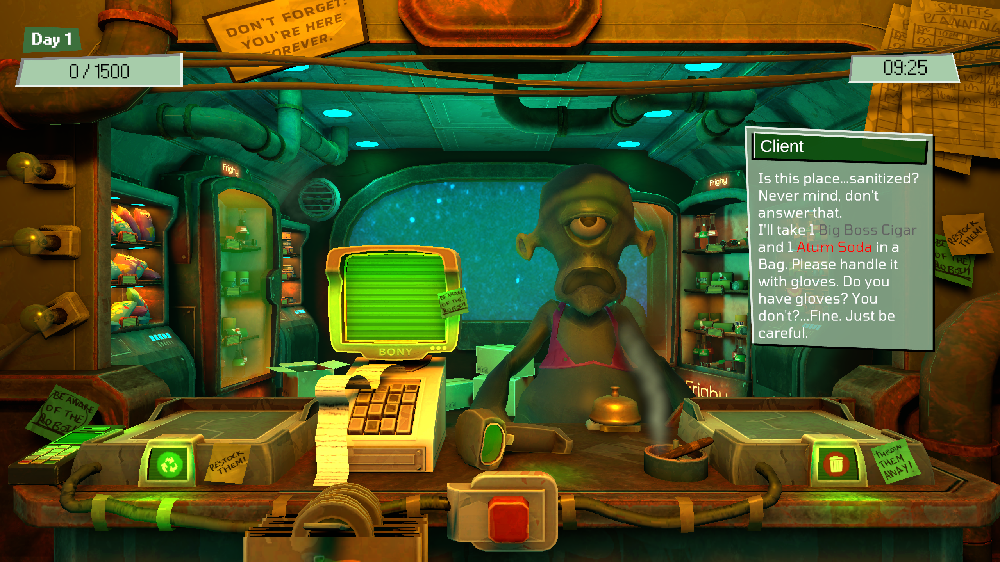
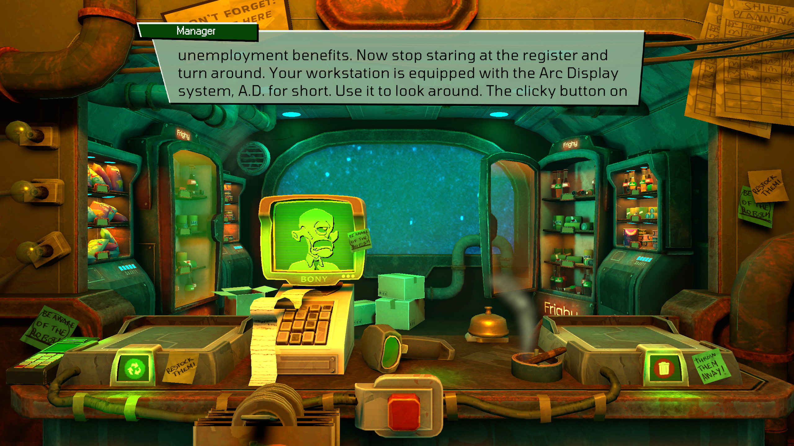
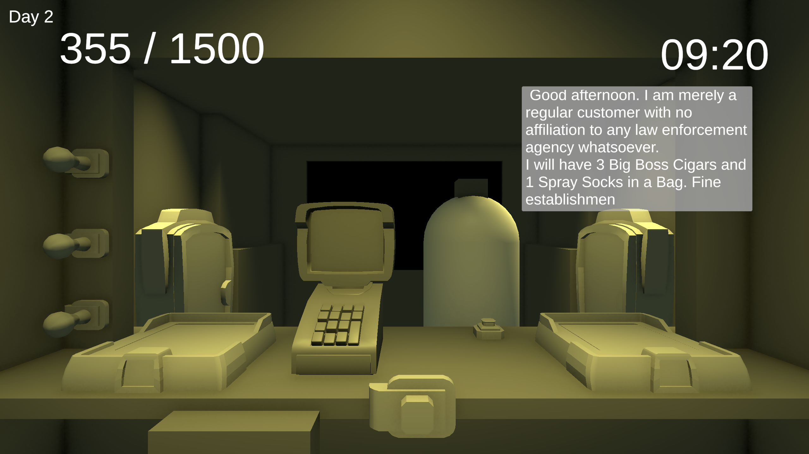
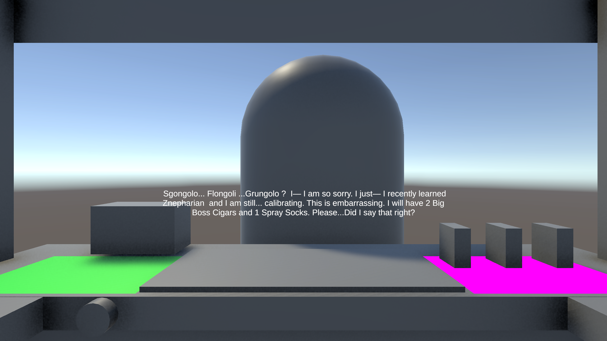

← Back to Narrative Design
.png)
Dialogue: I wrote the lines for the customers and for the undercover cops, in three states: before they are found out, when they are found out, and when the cashier fails to spot them.
Tutorial and end of shift: I wrote the tutorial and the victory and defeat messages at the end of each shift.
Dialogue system: I worked with a programmer of the team to build the dialogue system that best fit our game. The protagonist has no name and cannot answer, a design choice driven by the time we had and the plot features we needed.
Audio: I helped the sound designer find music that fit the game’s mood. I found the sound effects for objects, actions and the robot cops’ transformations. I also found samples of vocal sounds on Freesound and edited them into character voices, the way Hollow Knight does.
Readable orders, fast: With so little time per customer, the player had to understand at a glance what was being asked. We highlighted the products on sale with key colors.
Customers that don’t repeat: Customers are random, so to keep the experience varied I created a set of distinct characters. Each has a personality, a way of speaking, a dialogue length and a piece of the world to narrate.
Long dialogue on purpose: I used a few key characters in two ways: to slow down a player racing against the clock and annoy them, and to use those long conversations to make the Dodgy Depot universe feel believable.
A manager with a voice: The tutorial and the end-of-shift emails come from the shop manager, not from a neutral system. They carry his personality and the protagonist’s micro-plot.
Dodgy Depot
A retro-futuristic cashier sim set in a space minimarket, where you need to sell illegal items just to scrap by.
The concept
A retro-futuristic cashier sim set in a minimarket in space. The player serves customers against the clock, while some of them are undercover robot cops.
My role
Design decisions
Outcome
The gamers fan of the genre found or game entertaining and addicting for its rushed gameplay. In the end we had time to add even some tiny easter eggs
Gallery — screenshots & gifs



